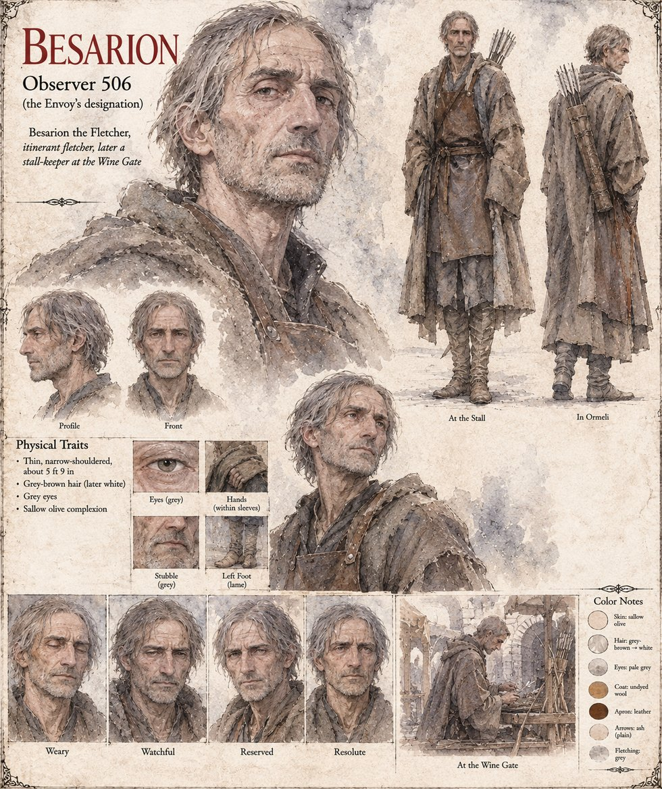

Observer 506
Envoy and Observer of Case 0233 · cover: Besarion the Fletcher, an itinerant fletcher, then a stall-keeper at the Wine Gate · no age given
Observer 506 is the designation, the only wholly honest thing about him, of the man who gives his name as Besarion: thin, grey-eyed, a little lame in the left foot, a fletcher on the road who wants bread and asks for it the way a man asks who has already done the arithmetic of his own hunger and found the sum acceptable. In his first nineteen hours in the valley he logs forty-one observations of the Warden’s household; forty are routine and one is the way Ketevan pretended to have eaten, which he enters under risk factors, because a people who will feed a stranger from the last of their flour will also keep whatever the stranger leaves, for the same reason: it would be rude not to. He does not note that he ate the porridge slowly. That was not a field the form provided. He stays three nights re-fletching the herders’ arrows with lammergeier feathers, asks no wage, is taken by the valley for a saint or a spy, and leaves before dawn. Ketevan is waiting in the yard with a long bundle in oiled sheepskin; he lets her offer it back twice and says Then keep it, until someone asks for it. His Interlude I filing records one bow and thirteen arrows delivered by hospitality with no explanation, compliant with the Directive in the letter and, on the most generous reading available, in the spirit, and ends: The form has no field for porridge.
He keeps his cover for the whole study as the old fletcher at the Wine Gate of Samaghvto, selling plain ash arrows, bird-bolts and hunting shafts to carters and boys at the same price to everyone, nursing one cup of watered wine in the corner of the Fourth Cup, aging at exactly the rate that a careful man would, a wrinkle at a time, as though the years were being issued to him against a requisition. Some carters hold his arrows lucky. Asked whether he made the bow, he says that he makes arrows. When Ketevan stops at his stall in the fourteenth year he says it before she can ask anything, what a man says who has been forbidden the one sentence she wanted and is offering, in exchange, the only honest one he has left. Between those scenes he files the Receiver’s log: request by request, the image received, the radius, the duration, the air it was drawn from and the proportion flag. The Receiver, he writes, receives an image and returns the weather that the image, taken literally, requires; it has no column for purpose and none for mercy. He enters, in the field the form keeps for things that are not findings, that the smallest request on file was the first and the only one to cost nothing, and that he has begun, without instruction, to look for the Warden when she passes.
On the twenty-second of Havren in the thirty-second year Ketevan’s daughter stops at his stall for the first time in thirty-two years of passing it, buys a plain arrow with a copper and asks whether it answers. I make arrows, he says; I know you do, she says. He follows her to the Hall at a distance, with a bundle of plain arrows under his arm that he does not remember choosing. He has one sentence, short, and true, and the Directive was written to forbid that sentence and no other. He does not say it. He stays until the woman in the shade of the wall has stopped moving, and then a while longer, which was not in the form, and goes back to the Wine Gate and sells nobody an arrow until dark. His closing note logs the exchange as compliant and enters, outside the form, that he had a statement of fact about the bow, accurate and of no use to her, and did not use it; that he has since sold a plain arrow to a boy who wished to hit a sparrow, and the boy missed, and he noticed that he was glad. Recall is acknowledged and the cover is to be dissolved at the next Uncounted Day. The Archival Log adds that his affect during and after the exchange was logged outside the form and that his self-review is pending. The sentence itself is never written down.
The manuscript gives his cover, thin build, grey eyes and lame left foot, and no age. The sheet’s narrow-shouldered build of about 5 ft 9 in, grey-brown hair that it says turns white later, grey stubble, sallow olive complexion, undyed-wool coat, leather apron, and quiver of plain ash arrows with grey fletching are its own, as are its panels Weary, Watchful, Reserved and Resolute, its two full-figure views (At the Stall, In Ormeli) and its scene At the Wine Gate. Its title line, Besarion the Fletcher, itinerant fletcher, later a stall-keeper at the Wine Gate, follows the manuscript.
“I make arrows.”